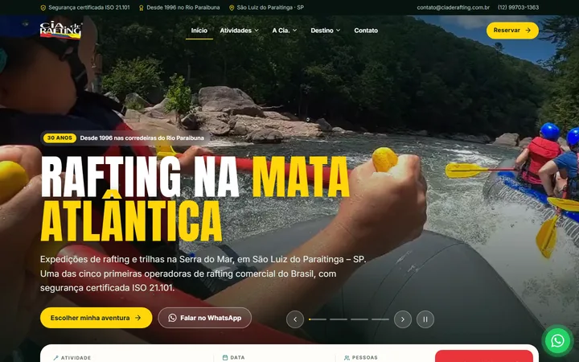
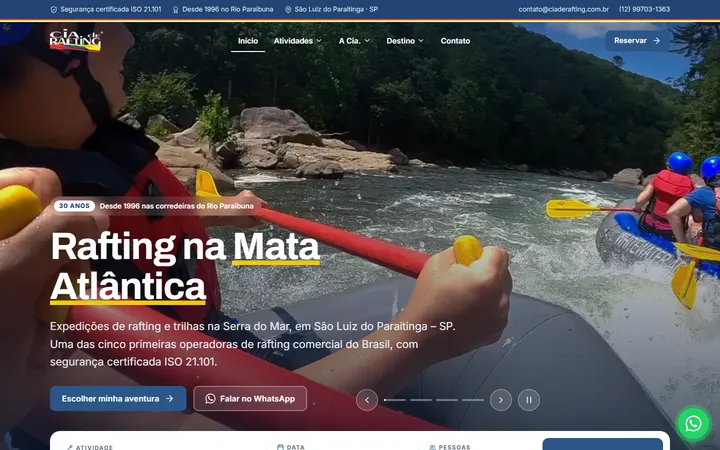
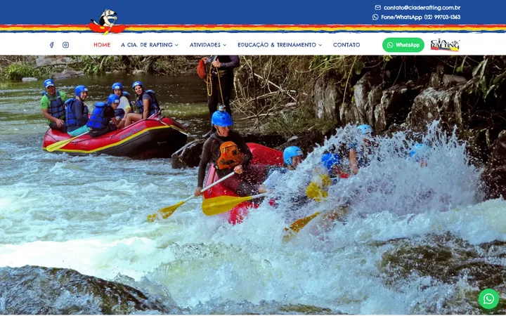

Revisões do site
Escolha uma versão para abrir. Cada uma é um site completo e independente, para comparar com calma.

rev0Primeira versão
Tema escuro, página única
A primeira proposta: home longa com tudo numa página, verde-escuro da Mata Atlântica.
- Agenda de vagas por bote
- Vídeo no topo e mascote animado

rev1Claro e sóbrio
Mesma estrutura, visual claro
A rev0 repaginada: fundo branco, azul-marinho da marca e faixa tricolor no topo.
- Títulos mais discretos
- Animações do logo mantidas

rev2Mais recente
Fiel ao site original, várias páginas
As 12 páginas do site atual, com o mesmo menu e textos, modernizadas e responsivas.
- Faixa azul com listras e mascote
- Galerias, trilhas em cartões, WhatsApp
Para comparar com o site que está no ar hoje:
Abrir o site original (Wix) ↗